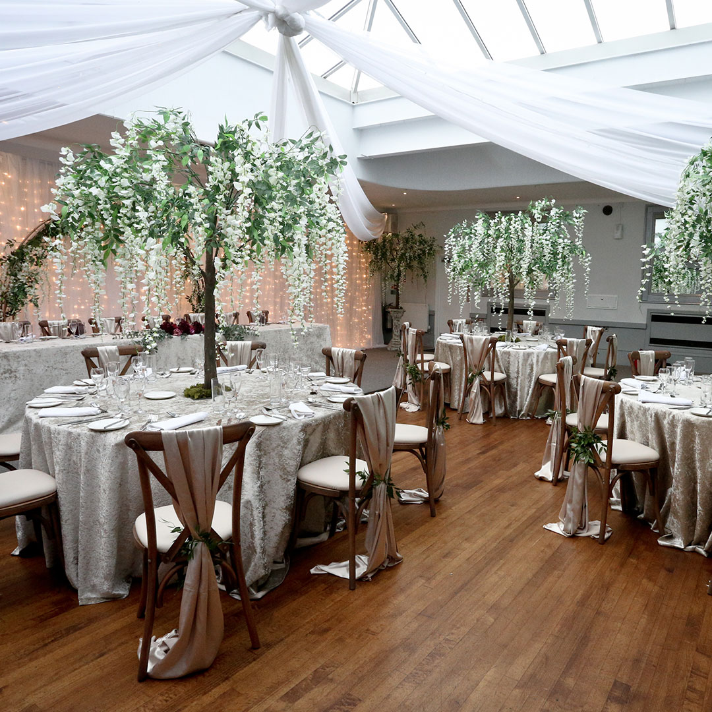
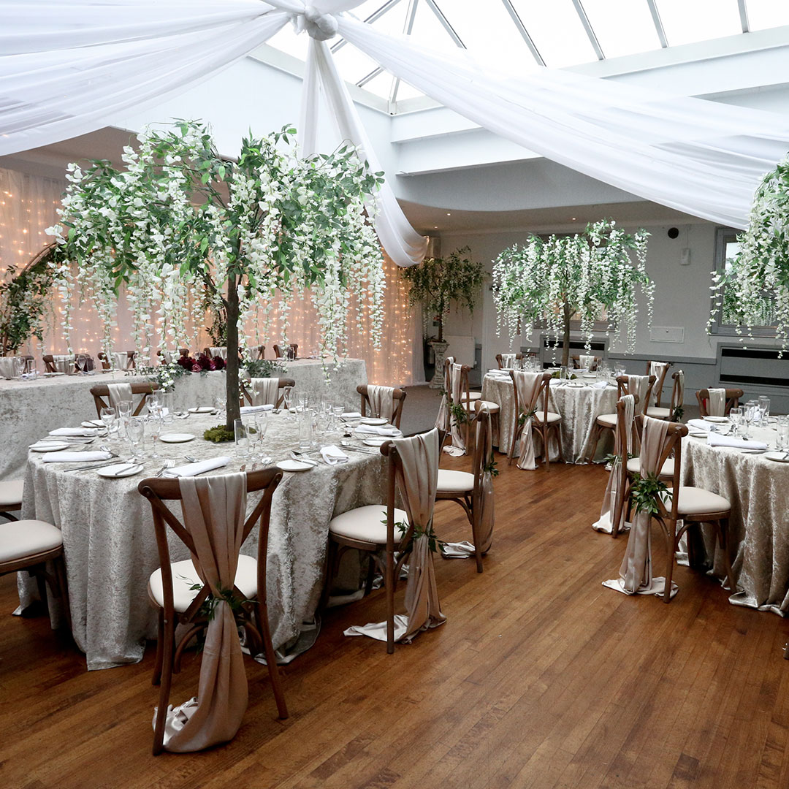

3rd July 2021
It's been a while!
Hi everyone! It's been a while since I posted anything on the wedding website - mainly because I've been working on this new one! No more website editing
via 'Hitched' and it's site building tools.
I hope everyone is doing well and getting through these very sh** times. The past couple of weeks have been filled with 'wedmin' and getting
everything confirmed with suppliers so we can enjoy the run up to the wedding.
There's been a couple of little changes that will affect you!
- The transport between venues is back on!
- To stay within budget, we've made a little change to the drinks given out after the ceremony and when you arrive back at Stirk House... there's a 50/50 split of Prosecco and Orange Juice instead of 100% prosecco, so you'll get the choice between soft drink and alcohol.
12th January 2021
Officially Postponed.
Our new date is Wednesday 20th April 2022. We'll be sending out some 'change the dates' over the next couple of weeks so you have something to keep.
Unfortunately we are no longer able to provide transport for our guests between venues due to the business we had hoped to use going out of business.
(This is no longer the case! - please refer to Order of the day page for updates on transport)
I hope you're all keeping safe and well in these worrying times!
See you all soon! Hopefully sooner than 2022!
Updated 3rd July 2021
14th August 2020
Getting real now!
All of our suppliers are booked, everything is ready to go, all decisions made. With any luck by April 2021 everything will be back to some form of
normality!
We've seen the inside of both of our venues and they're even more beautiful inside than they are outside, we can't wait for you to see them!
9th June 2020
Almost there...
So pretty much everything is booked and deposits paid for everything! It's scary and real now.
Venues confirmed, registrar confirmed, photographer confirmed, transport for guests to and from the ceremony confirmed, bridal party car confirmed,
bridal car confirmed, hair and make-up confirmed, pianist for the ceremony confirmed, flowers chosen, cake(s) chosen... now its just the fairly big
stuff to go... suits... rings...DJ... DRESS!
For a sneak peak... take a look at the pictures (these may [or may not] be what we are having on the day).

25th May 2020
Invitations!
So, after much designing and discussion with the Mister, we have finally decided on our design for the invitations and the colour scheme! As you all know, we have had to send you all out a change the date too! P.S in your original invite, you will have found a little bus ticket - you don't need these on the day - they're just for show.
12th May 2020
Venues, Venues, Venues!
I think we have chosen our favourite venues...
The Priest House for the Ceremony and Stirk House for the Reception.
We went for a little drive today to have a look around the outside of the venues - and completely fell in love.
We'll update again when we've seen the inside! Obviously because of lockdown, we've had to take a chance and book without seeing the inside...
but we get to see The Priests House on 18th June and we get to see Stirk House on 5th July - I'm sure we'll love them just as much when we see
the inside in person.

 
28th March 2020
The Proposal!
It's lockdown, but you have to make the best of crappy situations.
Getting engaged was definitely the best way to make these grim times much more happy and exciting!
We were meant to be going on holiday in April - where Tom admits he wanted to propose - but now with lockdown, who knew when the next opportunity would be?
He came into the living room, got down on one knee and opened up a little box with the most beautiful ring. I couldn't say "Yes" quick enough.
The dogs approved.